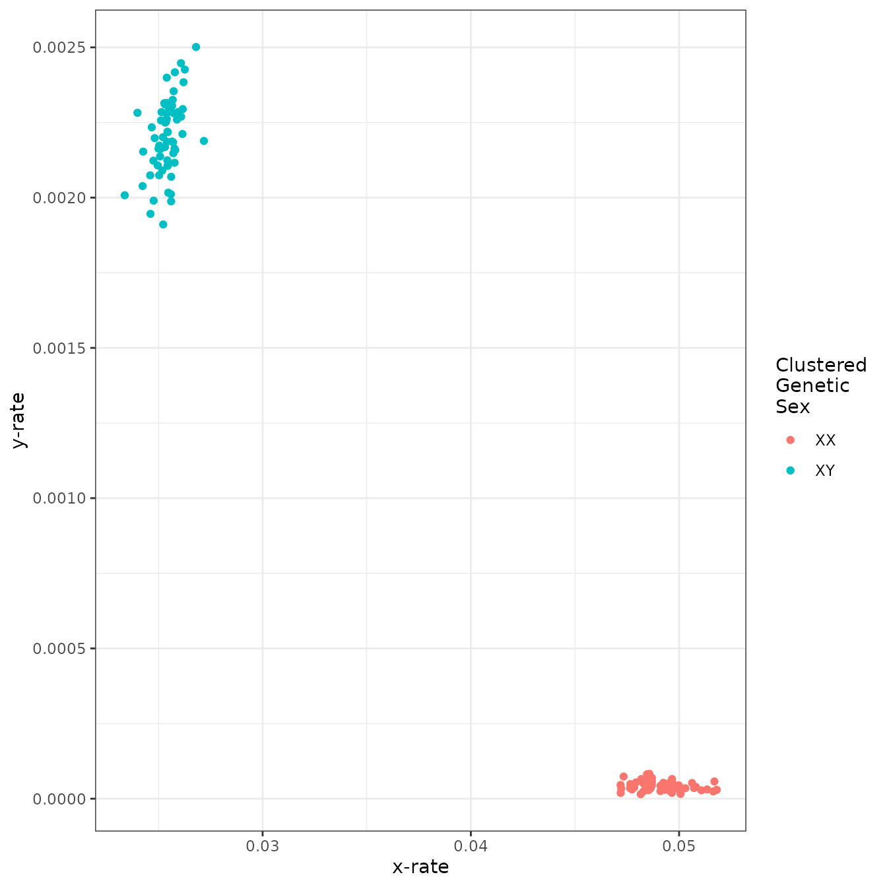
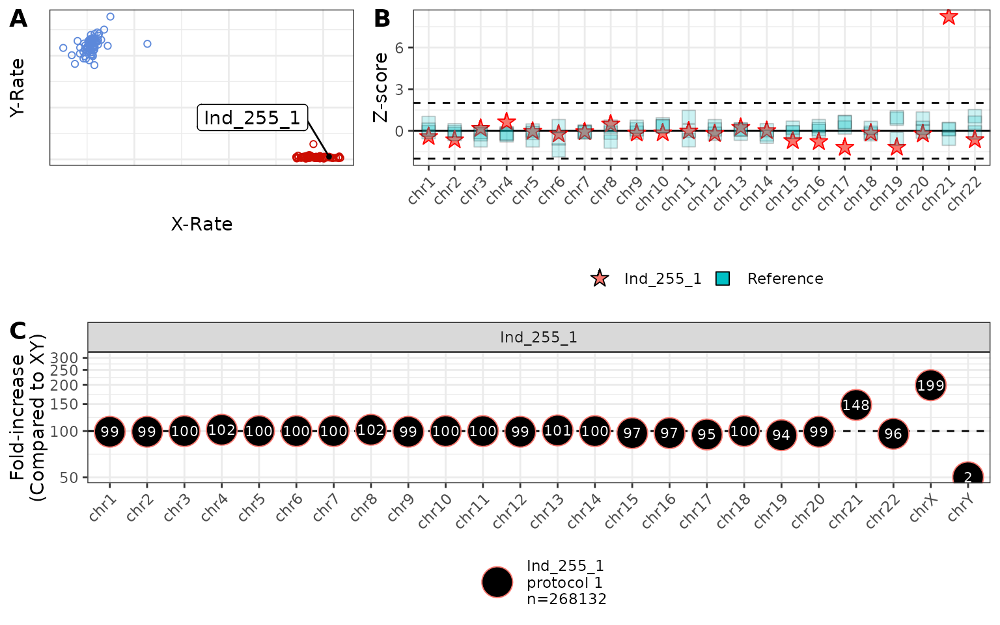
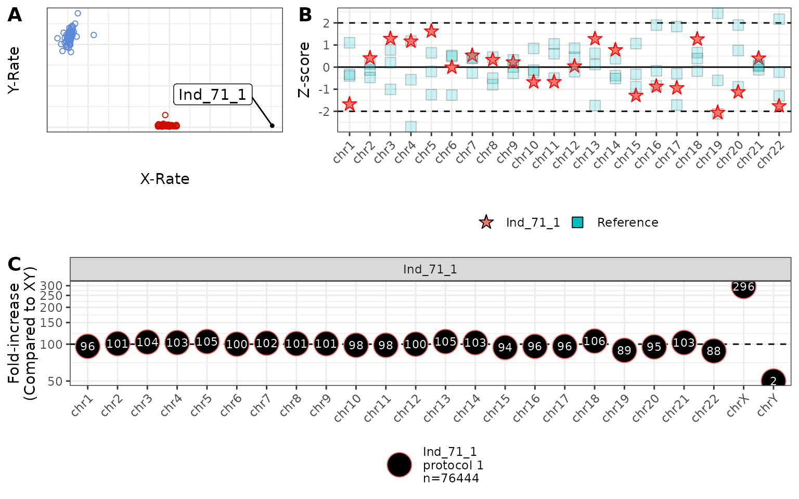
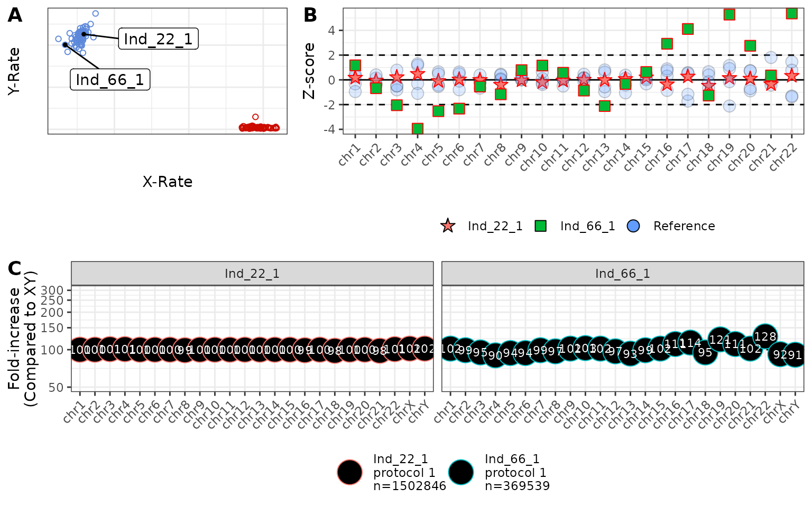

Example ChASM Analysis Using Example Data
example_analysis.Rmd
library(RChASM)
library(magrittr)
library(mclust)
#> Package 'mclust' version 6.1.2
#> Type 'citation("mclust")' for citing this R package in publications.
data(example_data)We begin with the in-built example data. However, any data set can be used as long as: the first column gives the sample IDs, and there are read counts for each chromosome (excluding MT) with column headers “chr1”, “chr2”,..,“chr22” and “X” and “Y”.
At this stage, if you have mixed data that uses different sequencing protocols, you can include this in a column titled “protocol”. If this is not included, the function will assume each row represents data using the same sequencing protocol (and assigns a column with the entry “default”). Essentially, RChASM treats the different protocols as separate analyses anyway.
# An example of data that RChASM analyses (omitting columns for chromosomes 3 to 21).
example_data %>%
dplyr::select(sample,protocol,chr1,chr2,chr22,X,Y) %>%
head()
#> # A tibble: 6 × 7
#> sample protocol chr1 chr2 chr22 X Y
#> <chr> <chr> <dbl> <dbl> <dbl> <dbl> <dbl>
#> 1 Ind_1_1 Protocol 1 7471 7955 1209 4725 5
#> 2 Ind_1_2 Protocol 1 4248 4206 760 2382 2
#> 3 Ind_3_1 Protocol 1 9839 9935 1779 2968 235
#> 4 Ind_4_1 Protocol 1 34248 35719 5707 21254 12
#> 5 Ind_5_1 Protocol 1 2306 2357 397 1484 1
#> 6 Ind_6_1 Protocol 1 58317 59471 10206 17742 1576processReadCounts() takes the per chromosome read counts, and produces a type-specific (autosomal/sex chromosomal) data for the downstream analyses. Two types of chromosomal aneuploidies can be explored here: autosomal or sex chromosomal. We begin with autosomal aneuploidies (sex chromosomal aneuploidies follow in the next code section) by setting refType=“auto”.
To filter data to exclude very low-coverage data (at least 1,000 reads), we set “minTotal=1e3”. Note that these samples will not necessarily be included in training the model, and can be just kept for calling karyotypes (although caution must be used interpreting low-coverage samples).
We encourage a minimum of at least 30 samples (per protocol), and a functional minimum of 23 exists for estimating the parameters of the Dirichlet prior distribution.
# Makes the read count input tibble for autosomal aneuploidies
indat.auto.example <- example_data %>%
processReadCounts(refType = 'auto',
minSamplesPerProtocol = 30,
minTotal = 1e3)We now have the data required to search for autosomal aneuploidies, and run the same function to produce data for searching for sex chromosomal aneuploidies. This process requires that, for sex chromosomal aneuploidies, all autosomal reads are merged into one “category”, leaving us with just the number of reads mapping to the X and Y chromosomes, and then the number mapping to the autosomes.
# Makes the read count input tibble for sex chromosomal aneuploidies
indat.sca.example <- example_data %>%
processReadCounts(refType = 'sca',
minSamplesPerProtocol = 30,
minTotal = 1e3)Now that we have the required read counts, we estimate the parameters of the underlying Dirichlet prior distributions using the function makeDirichlet(). These parameter values address the fact that expected proportion of reads mapping to each chromosome is not so constant, due to subtle differences in sample quality, or sequencing runs (say) While these values are required for the method to work, the user never uses them directly.
This function takes as input the cleaned read count data, the refType (again) and then minimum and maximum numbers of reads to be used in parameter estimation. A minimum is used to ensure the sample is high quality, but in many cases very, very high quality data with billions of reads can perform abnormally compared to more “average” sequence data (especially in capture data where stacking can occur). We encourage users to think about what is an “average” sequence, and set these values accordingly. We have found that these values seem to perform well for our simulated and empirical data so far.
Note that parameters must be estimated for both autosomal aneuploidies, and….
# Calculate parameters for the Dirichlet prior for autosomal aneuploidies
inDirichlet.auto.example <- makeDirichlet(
indat.auto.example,
refType = 'auto',
min_reads = 1e5,
max_reads = 1e9
)the sex chromosomal aneuploidies.
# Calculate parameters for the Dirichlet prior for sex chromosomal aneuploidies
# (Warning: this one produces a plot for making sure the clustering makes sense!)
inDirichlet.sca.example <- makeDirichlet(
indat.sca.example,
refType = 'sca',
min_reads = 1e5,
max_reads = 1e9
)
Importantly, when estimating the parameters for the sex chromosomes, we generate a plot of the “training clusters”. Internally, the function filters outliers, and clusters the data into XX and XY clusters. Make sure that this plot looks reasonable, otherwise your model will be poorly trained and the resulting calls will be meaningless.
We now call the karyotypes using the callKaryotypes() function. Again, we do this for autosomal and sex chromosomal aneuploidies separately, but the function will detect which reference type we are using. This function requires the read count data, and the Dirichlet parameters. Note that you must still supply match read count and Dirichlet inputs for either autosomal or sex chromosomal references as, (for example) if you supply read counts for the autosomes but the Dirichlet parameters for the sex chromosomal aneuploidies, the method will fail and throw an error (complaining about missing column names!).
The only additional input is the (prior) estimated proportion of “contaminated” samples (here 0.01 or 1%). This value must be considered using either experience, or using other methods to estimate contamination.
Here we perform calling for autosomal aneuploidies….
# Makes karyotype calls for autosomal aneuploidies
calls.auto.example <- callKaryotypes(
indat.auto.example,
inDirichlet.auto.example,
p_contamination = 0.01
)and then sex chromosomal aneuploidies.
# Makes karyotype calls for sex chromosomal aneuploidies
calls.sca.example <- callKaryotypes(
indat.sca.example,
inDirichlet.sca.example,
p_contamination = 0.01
)Next, we calculate Z-scores for how different the observed proportion of reads mapping to each autosomal chromosome is compared to what was expected (given the posterior Dirichlet-multinomial distribution). These values have two uses.
First, we can use them to show that significantly more/less reads than expected mapped to chromosomes of interest (13, 18 or 21), strengthening the evidence for the associated autosomal aneuploidies.
Second, we might like to look at whether karyotype calls might be due to the true presence of the karyotype, or simply because of abnormal sequencing. For example, failed sequencing runs may cause reads to map almost randomly to chromosomes. To address this, we calculate a chi-squared statistic based on these Z-scores (but ignoring chromosomes 13, 18 or 21). Here we also calculate the number of significant Z-scores, and call this total “flag”.
# Calculate Z-scores
z.scores.example <- makeZscores(
indat.auto.example,
refType = "auto",
min_reads = 1e3,
max_reads = 1e9
)
z.scores_diagnostic.example <- makeZscores(
indat.auto.example,
refType = 'diagnostic',
min_reads = 1e3,
max_reads = 1e9
)Inspecting the calls for the autosomal aneuploidies, we find that we have one individual of interest. We encourage users to restrict confident calls to where: (a) there are at least 60,000 reads, (b) the maxP (the posterior probability of the karyotype) is greater than 0.95, (c) that the sample is not unusual and (d) the number of flags is less than three.
Note that we use the diagnostic z-scores here, and not the autosomal z-scores, because if the individual carries trisomy 21, then of course the read counts for chromosome 21 will be highly “unusual”!.
# Do we have any suspected autosomal aneuploidy cases?
calls.auto.example %>%
dplyr::left_join(z.scores_diagnostic.example %>%
dplyr::group_by(sample,p,unusual) %>%
dplyr::summarise(flag=sum(flag)) %>%
dplyr::ungroup(),
by=c('sample'='sample')) %>%
dplyr::select(sample,P_call,total,maxP,p,unusual,flag) %>%
dplyr::filter(P_call!='No Aneuploidy')
#> `summarise()` has grouped output by 'sample', 'p'. You can override using the
#> `.groups` argument.
#> # A tibble: 1 × 7
#> sample P_call total maxP p unusual flag
#> <chr> <chr> <dbl> <dbl> <dbl> <lgl> <int>
#> 1 Ind_255_1 Trisomy 21 254544 1 1.000 FALSE 0Here, we find that individual “Ind_255_1” might carry trisomy 21, and we can inspect this by generating a diagnostic plot. Note that multiple IDs can be given in the IDs input, but adding too many at once can make the plot look too busy.
# Diagnostic plot for Trisomy 21
plot_diagnostic(
IDs='Ind_255_1',
calls.auto = calls.auto.example,
calls.sca = calls.sca.example,
inDirichlet.auto = inDirichlet.auto.example,
inDirichlet.sca = inDirichlet.sca.example,
z.scores = z.scores.example,
min_reads = 6e4,
max_reads = 1e9,
addLabels = TRUE
)
#> Warning: Removed 1 row containing missing values or values outside the scale range
#> (`geom_text()`).
This plot can be interpreted in the following way:
This plot is the x-rate (the proportion of reads mapping to the X chromosome) vs the y-rate (the proportion of reads mapping to the y chromosome). We colour a random sample of samples blue (XY) and red (XX) for reference, and denote the position of the individuals of interest using a repelled label. In this example, we can see that Ind_255_1 falls within the variation of other XX individuals (and the sex chromosomal karyotype was indeed XX in this case). This plot can be used for assessing/confirming sex chromosomal aneuploidies.
This plot shows the Z-score per chromosome for the individuals of interest, compared to five randomly selected individuals. here we can see that, except for chromosome 21, all read counts are within reasonable variability (±2 standard deviations), confirming that the call of trisomy 21 is not due to strange sequencing.
This plot shows the increase/decrease in the proportion of reads mapping to each chromosome, compared to the “average” XY individual. Here we see that there is approximately 48% more reads mapping to chromosome 21 than expect, consistent with an extra copy of chromosome 21 being present (trisomy 21). We also see that we have twice as many copies of the X chromosome and basically no copies of the Y chromosome (compared to XY), consistent with XX. We also see that Ind_255_1 was produced using “protocol 1” and had 268,132 mapped reads.
We now generate a diagnostic plot for an individual who carries the sex chromosomal aneuploidy XXX. We see three possible cases, although with only 1,579 reads, Ind_75_1 should be considered with caution, or even ignored. We investigate Ind_71_1.
# Do we have any suspected sex chromosomal aneuploidy cases?
calls.sca.example %>%
dplyr::left_join(z.scores_diagnostic.example %>%
dplyr::group_by(sample,p,unusual) %>%
dplyr::summarise(flag=sum(flag)) %>%
dplyr::ungroup(),
by=c('sample'='sample')) %>%
dplyr::select(sample,P_call,total,maxP,p,unusual,flag) %>%
dplyr::filter(!P_call%in%c('XX','XY'))
#> `summarise()` has grouped output by 'sample', 'p'. You can override using the
#> `.groups` argument.
#> # A tibble: 3 × 7
#> # Rowwise:
#> sample P_call total maxP p unusual flag
#> <chr> <chr> <dbl> <dbl> <dbl> <lgl> <int>
#> 1 Ind_71_1 XXX 76444 1 0.368 FALSE 0
#> 2 Ind_75_1 XXY 1579 0.992 0.311 FALSE 0
#> 3 Ind_185_1 XXX 225713 1 0.885 FALSE 1Note here that:
- The individual sits to the right of the XX cluster, consistent with XXX.
- Has no flags and is not “unusual”.
- Appears to carry three times as much of chromosome X (296%), and virtually nothing from chromosome Y (compared to XY), consistent with XXX.
# Test diagnostic plot is working!
plot_diagnostic(
IDs='Ind_71_1',
calls.auto = calls.auto.example,
calls.sca = calls.sca.example,
inDirichlet.auto = inDirichlet.auto.example,
inDirichlet.sca = inDirichlet.sca.example,
z.scores = z.scores.example,
min_reads = 6e4,
max_reads = 1e9,
addLabels = TRUE
)
#> Warning: Removed 1 row containing missing values or values outside the scale range
#> (`geom_text()`).
Finally, we show a diagnostic for two individuals. An individual with read counts that behave well (Ind_22_1), and an individual where the read counts are behaving poorly (Ind_66_1).
# Test diagnostic plot is working!
plot_diagnostic(
IDs=c('Ind_22_1','Ind_66_1'),
calls.auto = calls.auto.example,
calls.sca = calls.sca.example,
inDirichlet.auto = inDirichlet.auto.example,
inDirichlet.sca = inDirichlet.sca.example,
z.scores = z.scores.example,
min_reads = 6e4,
max_reads = 1e9,
addLabels = TRUE
)
#> Warning: Removed 1 row containing missing values or values outside the scale range
#> (`geom_text()`).